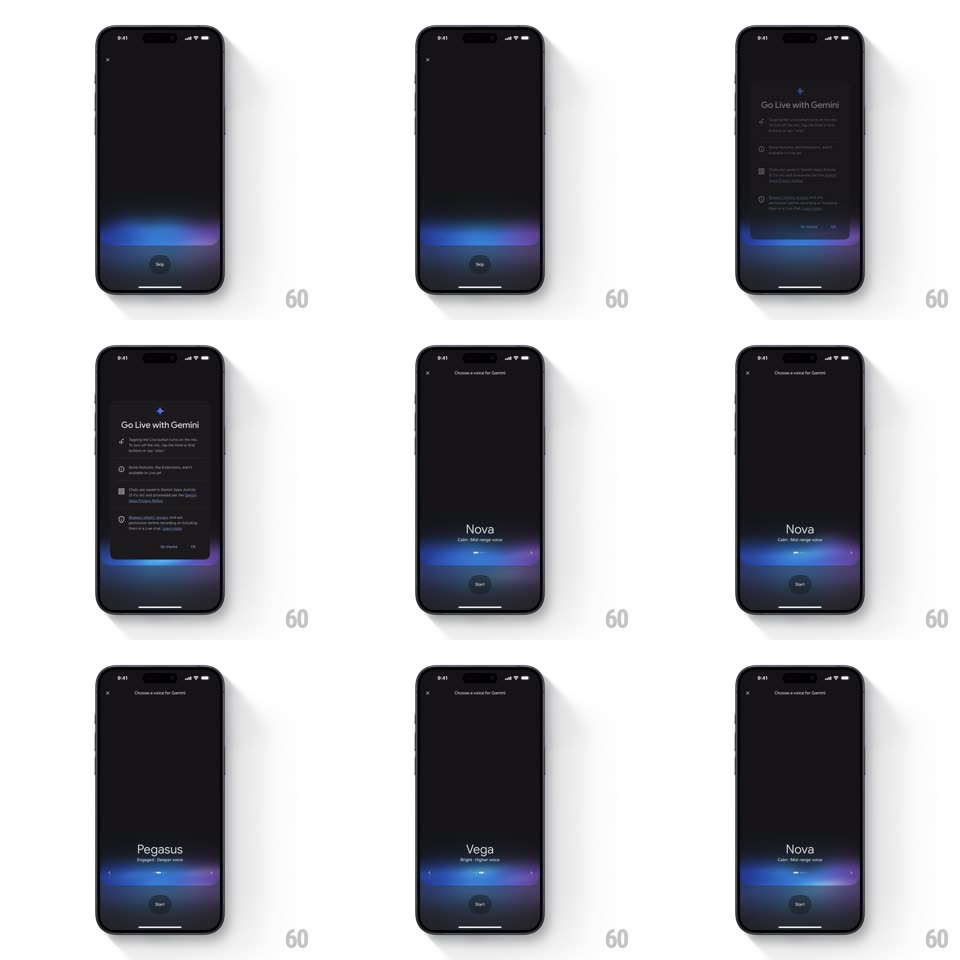

Media
Frame-by-frame

Rebuild this interaction 1:1: Gemini's voice picker - a swipeable card stack for choosing Gemini's voice (Nova "Calm, Mid-range voice", Pegasus "Engaged, Deeper voice", Vega "Bright, Higher voice"), where swiping slides the current voice card aside to reveal the next, each with its own reactive ambient waveform, plus a Start button to confirm.

Rebuild this interaction 1:1: Gemini's voice picker - a swipeable card stack for choosing Gemini's voice (Nova "Calm, Mid-range voice", Pegasus "Engaged, Deeper voice", Vega "Bright, Higher voice"), where swiping slides the current voice card aside to reveal the next, each with its own reactive ambient waveform, plus a Start button to confirm.
## Integration
Integration: stack-agnostic spec - springs given as stiffness/damping, timed motions as duration + curve; map every value to your framework and animation library of choice.
## Scene
Black screen, X close top-left, "Choose a voice for Gemini" header. Centered voice name with descriptor, ambient blue/purple waveform band at bottom, Start pill beneath it. Preceded by a "Go Live with Gemini" info sheet.
## Motion spec
Pattern: horizontal swipe pager with per-page ambience.
- Swipe: the current voice block (name + descriptor + waveform) tracks the finger 1:1 horizontally; the next voice slides in from the opposite edge, waveform tint shifting with position.
- Release past 40%: the outgoing block exits (translateX + fade to 0.3 opacity, spring ~360/26, 320ms) and the incoming block settles center with a small overshoot; the waveform band crossfades to the new voice's hue on the same spring.
- Swipe back reverses identically; the pager wraps around the voice list.
- The waveform keeps breathing through the whole gesture (undulation never pauses, only tints).
- Tap Start: the picker slides down and out (spring ~340/24, 350ms) and the Live session screen rises in its place.
## Calibration
- Each voice has a distinct waveform character - Pegasus sits lower/slower, Vega higher/faster.
- Voice name and descriptor swap as a unit - no independent fades between them.
## Reduced motion
Voice blocks crossfade (250ms); waveform tint fades.
## Don't miss
- The waveform band is part of the card - it swipes with the name, not a fixed background.
- The descriptor ("Calm, Mid-range voice") is set in a lighter weight directly under the name.